Cross-network sync
Devices on one network connect directly. On different networks, content is end-to-end encrypted and relayed — office, home and a phone hotspot all stay on the same clipboard.
Clipboard across devices · Windows / macOS / Linux
One clipboard across networks and systems: Windows, macOS and Linux together.
Send files and folders by dropping them on the window, compare and sync AI tool
configuration across devices, and bring any recent clip back with
Ctrl+Shift+V. A phone needs no app: scan and use it.
same Wi-Fiauto-discoveryencryptedno server
Interface
Sync state, this machine, phone scanning, quick settings and quick actions.
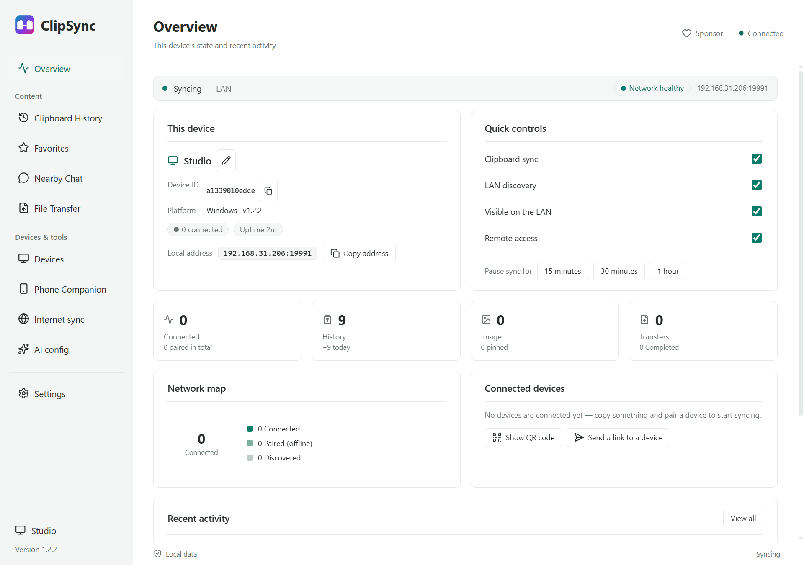
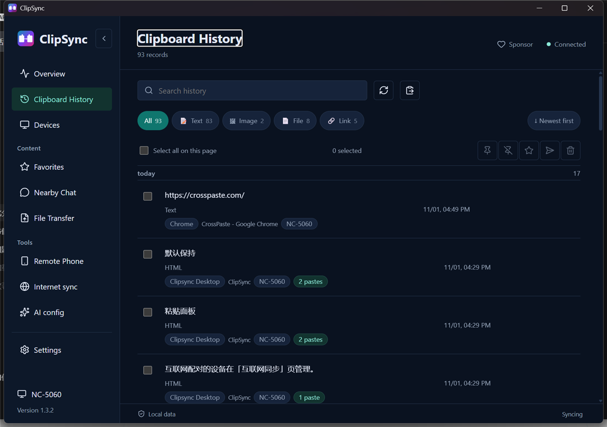
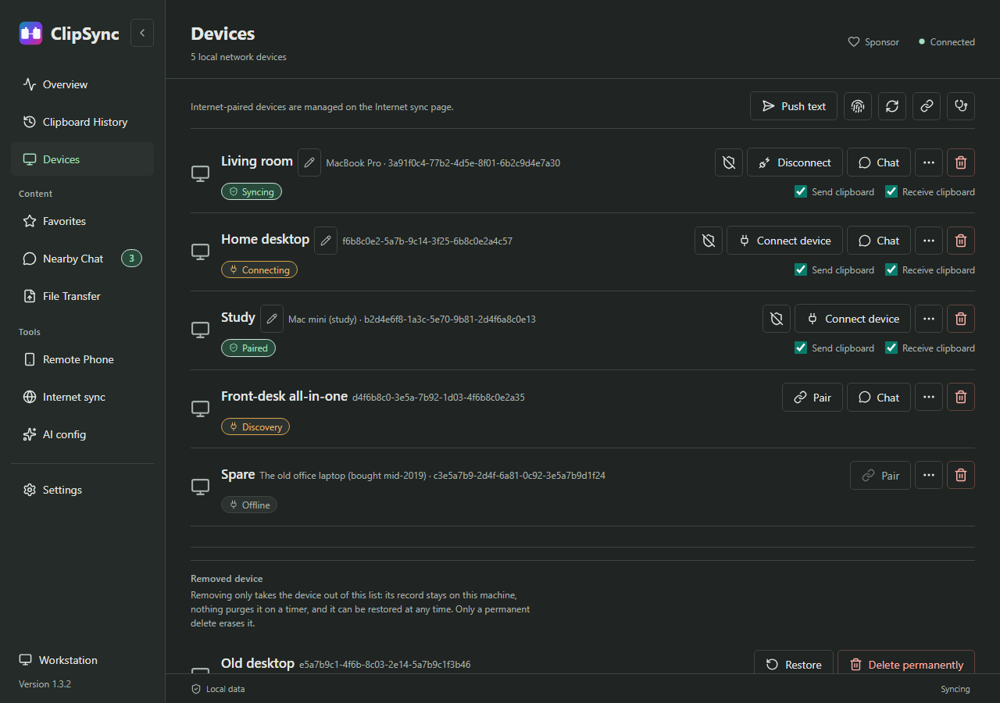
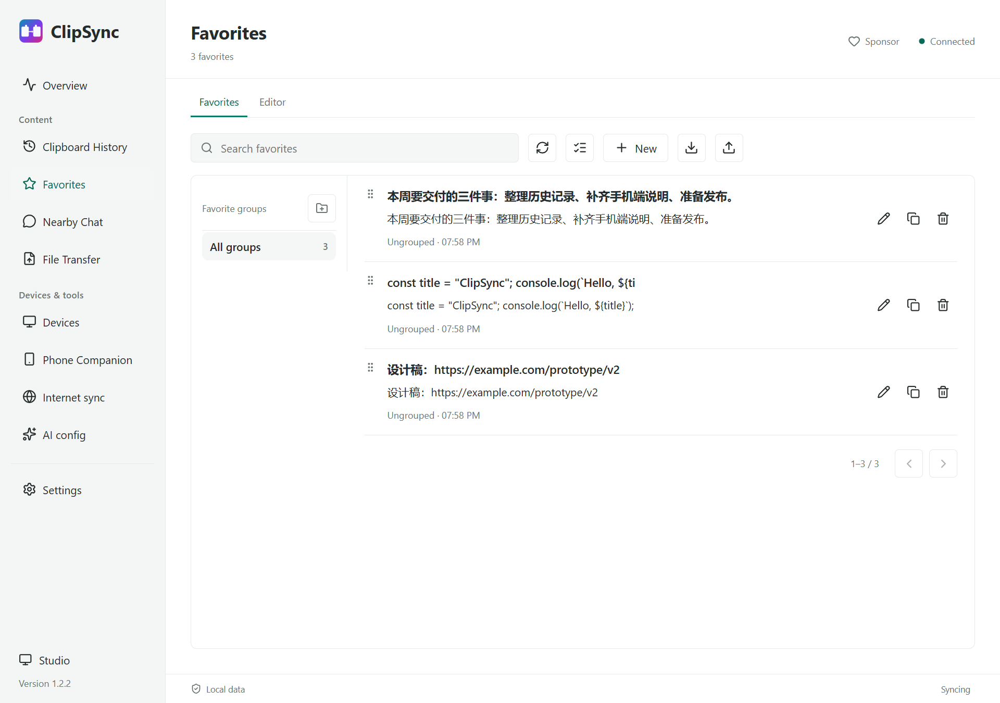
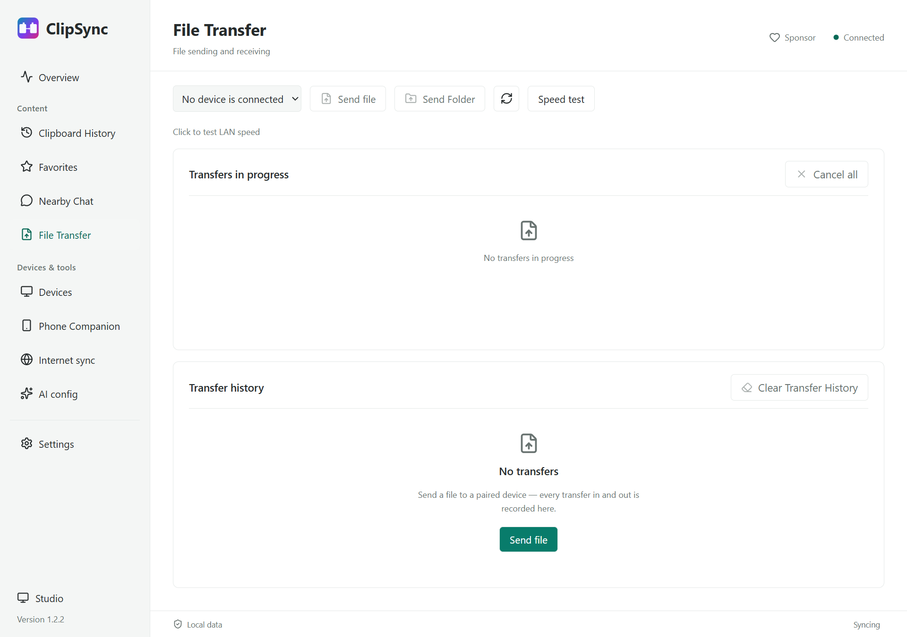
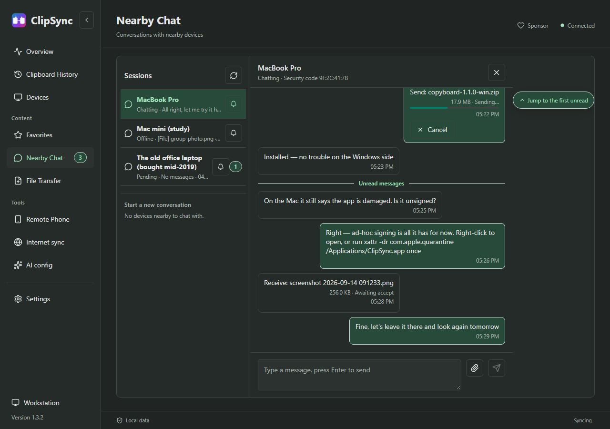
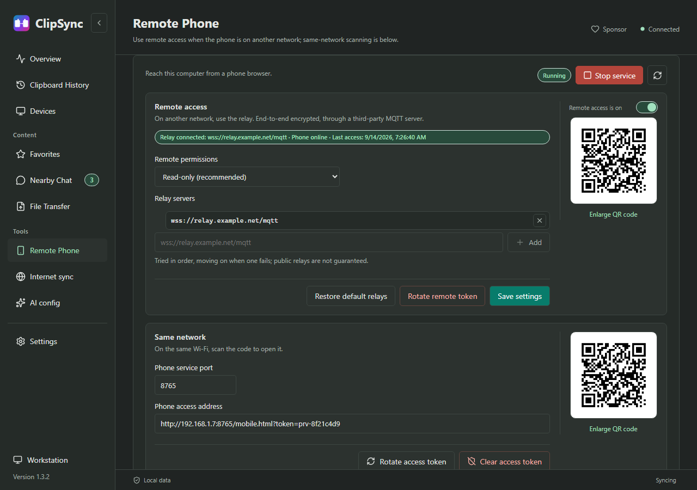
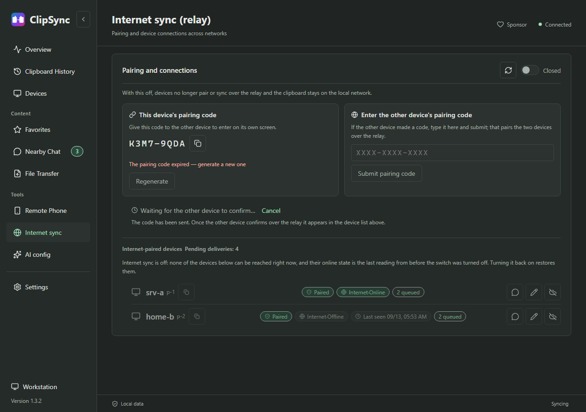
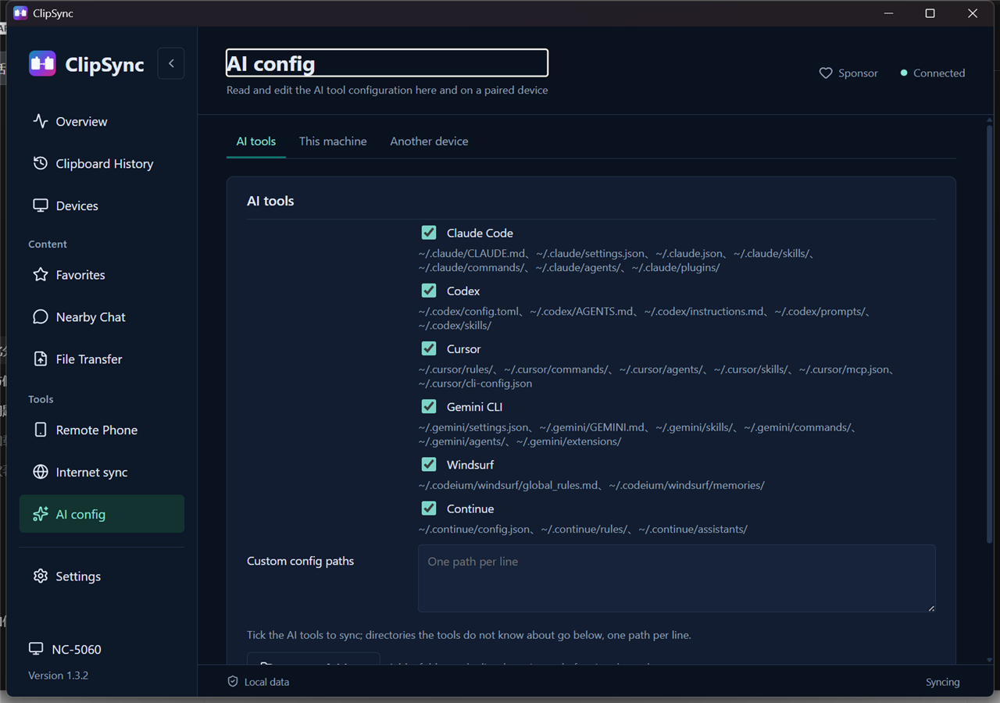
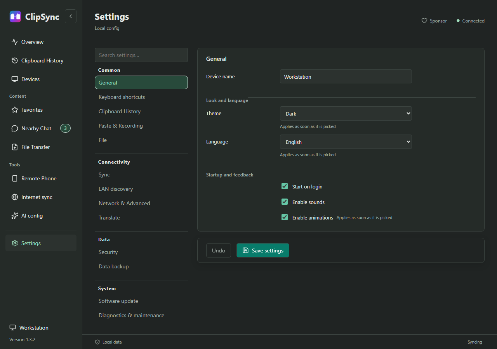
What you get
Not another cloud drive, and not a chat with yourself. Copy and paste stay the same; they just stop being limited by device, system or network.
Devices on one network connect directly. On different networks, content is end-to-end encrypted and relayed — office, home and a phone hotspot all stay on the same clipboard.
Windows, macOS and Linux desktop apps sync with each other. A phone needs no app: scan a QR code to read history, grab a clip or send a file.
Built-in profiles for Claude Code, Codex, Cursor, Gemini CLI, Windsurf and Continue. Compare configuration across devices, then overwrite, keep a copy or merge.
Drop files or folders on the window to send them. Folders are packed automatically and unpacked on paste; large files are fetched on demand instead of occupying disk up front.
Ctrl+Shift+V opens a searchable picker. Arrow keys choose, Enter pastes into the active app; plain text, images, files and favorites are all supported.
Text, links, pictures, HTML and files sync. History can be searched, filtered and pinned, and copying back and forth between two machines does not duplicate entries.
First time
When to use it
Keep working the way you already do: copy and paste.
| Situation | How it works |
|---|---|
| Home and office computers | Keep in sync on different networks; content travels encrypted between the devices |
| Moving things between a desktop and a laptop | They find each other on the same Wi-Fi; connect once, then copy as usual |
| Getting something from the computer on a phone | Show the QR code and open it in the phone's browser, with no app to install |
| Handing a file to a colleague or friend | Drop it on the window and pick a device; machines on the same network do not need connecting first |
| Keeping replies, addresses and code snippets handy | Save them in the library and copy one back whenever you need it |
| Talking to the device nearby | Computers on the same Wi-Fi can chat and send files without adding each other first |
Privacy
On the same Wi-Fi, the computers find each other directly. On different networks, content is encrypted before it passes through a relay. Neither way needs a cloud account holding your clipboard.
[FILTERED]; choose the categories in Settings.Phone
The computer shows a QR code. Scan it with the phone's camera or browser and the same clipboard history opens. Add it to the home screen on iOS or Android and it is one tap away.
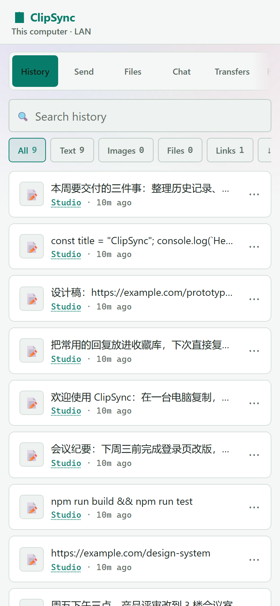
Download · latest version
Download, install and open. Windows, macOS and Linux all work together.
Windows 10 / 11 · 64-bit
Apple silicon / Intel
x86_64 / ARM64
Pick the build that fits your machine. All downloads are hosted by Cloudflare.
FAQ
No. On the same Wi-Fi it is easiest and they find each other automatically; on different networks, turn on internet sync and keep going.
No. Install, pair the devices and you are ready; there is no sign-up or login.
On the same Wi-Fi, content travels directly between your devices. Across networks it is encrypted before a relay forwards it; the relay does not keep it.
No. Show the QR code on the computer and open it in the phone's browser. You can add it to the home screen for one-tap access.
Yes. Windows, macOS and Linux computers can pair, sync the clipboard and send files to one another.
Yes. Closing the window puts it in the tray and clipboard sync continues. Use Quit in the tray menu to exit for real.
No. Download the installer for your system, install it and open the app.
You can set a retention limit, check how much space it uses and clear all history in Settings. Saved favourites are not cleared.
Right-click ClipSync in Finder, choose Open and confirm. If it still says the app is damaged, run xattr -dr com.apple.quarantine /Applications/ClipSync.app in Terminal and open it again.
It is free for personal and other noncommercial use. Commercial use in a company, paid product or hosted service needs a commercial license first.
Support the project
There are no ads and no account. Your support keeps it maintained and improving.